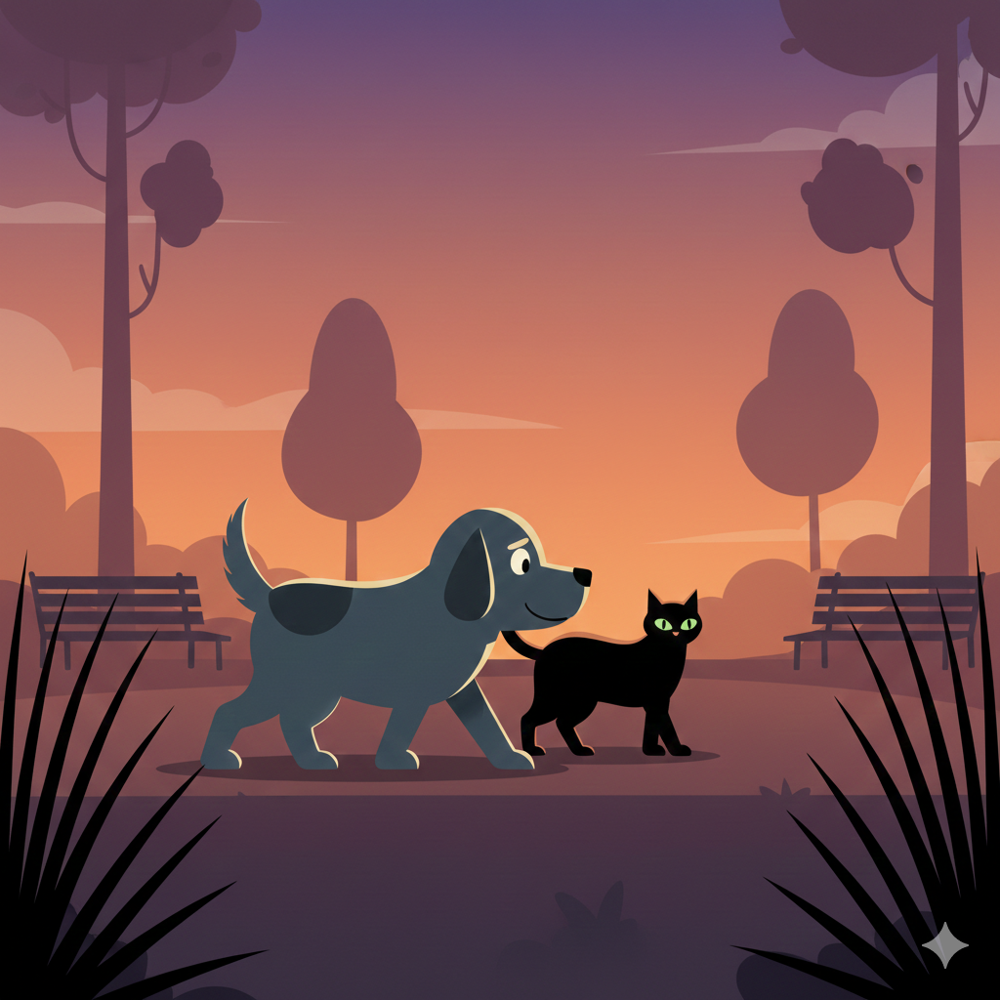

Miku decidió caminar despacio junto a Jake. Cada paso era más consciente, más tranquilo.
Descubrieron un pequeño parque lleno de hojas y sonidos nuevos.
Jake sonreía, disfrutando el momento sin apresurarse.
¿Qué harán ahora?
